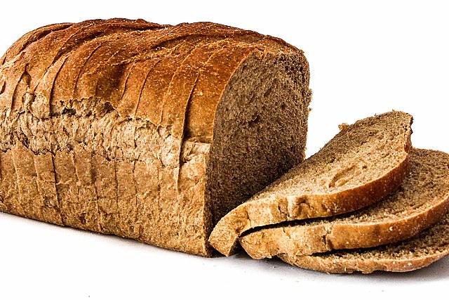

White Bread

Bread
Whether you have a slice of bread in the morning for breakfast, or bread for a sandwich at noon, I think we can
all agree that bread is the best invention since the wheel.
Since ages long past, every generation has made a loaf of bread, and bread has become a staple food for many.
Ingredients
- 2 CupsWarm Water
- 1 TablespoonWhite Sugar
- 10g / 1 SachetActive Dry Yeast
- 1.5 TeaspoonsSalt
- Quarter CupOil
- 6 CupsWhite Bread Flour
Steps
- In a large bowl, dissolve the sugar in warm water, and then stir in yeast. Allow to proof until yeast
resembles a creamy foam.
- Mix salt and oil into the yeast. Mix in flour one cup at a time. Knead dough on a lightly floured surface
until smooth. Place in a well oiled bowl, and turn dough to coat. Cover with a damp cloth. Allow to rise
until doubled in bulk, about 1 hour.
- Punch dough down. Knead for a few minutes, and divide in half. Shape into loaves, and place into two well
oiled 9x5 inch loaf pans. Allow to rise for 30 minutes, or until dough has risen 1 inch above pans.
- Bake at 350 degrees F (175 degrees C) for 30 minutes.